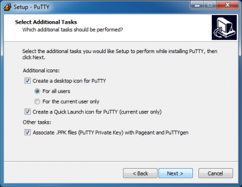

SSH¶
All ULHPC servers are reached using either the Secure Shell (SSH) communication and encryption protocol (version 2).
Developed by SSH Communications Security Ltd., Secure Shell is a an encrypted network protocol used to log into another computer over an unsecured network, to execute commands in a remote machine, and to move files from one machine to another in a secure way. On UNIX/LINUX/BSD type systems, SSH is also the name of a suite of software applications for connecting via the SSH protocol. The SSH applications can execute commands on a remote machine and transfer files from one machine to another. All communications are automatically and transparently encrypted, including passwords. Most versions of SSH provide login (ssh, slogin), a remote copy operation (scp), and many also provide a secure ftp client (sftp). Additionally, SSH allows secure X Window connections.
To use SSH, you have to generate a pair of keys, one public and the other private. The public key authentication is the most secure and flexible approach to ensure a multi-purpose transparent connection to a remote server. This approach is enforced on the ULHPC platforms and assumes that the public key is known by the system in order to perform an authentication based on a challenge/response protocol instead of the classical password-based protocol.
The way SSH handles the keys and the configuration files is illustrated in the following figure:

Installation¶
- OpenSSH is natively supported on Linux / Mac OS / Unix / WSL (see below)
- On Windows, you are thus encouraged to install Windows Subsystem for Linux (WSL) and setup an Ubuntu subsystem from Microsoft Store.
- You probably want to also install Windows Terminal and MobaXterm
- Better performance of your Linux subsystem can be obtained by migrating to WSL 2
- Follow the ULHPC Tutorial: Setup Pre-Requisites / Windows for detailed instructions.
SSH Key Generation¶
To generate an RSA SSH keys of 4096-bit length, just use the ssh-keygen command as follows:
ssh-keygen -t rsa -b 4096 -a 100
After the execution of this command, the generated keys are stored in the following files:
- SSH RSA Private key:
~/.ssh/id_rsa. NEVER EVER TRANSMIT THIS FILE - SSH RSA Public key:
~/.ssh/id_rsa.pub. This file is the ONLY one SAFE to distribute
To passphrase or not to passphrase
To ensure the security of your SSH key-pair on your laptop, you MUST protect your SSH keys with a passphrase! Note however that while possible, this passphrase is purely private and has a priori nothing to do with your University or your ULHPC credentials. Nevertheless, a strong passphrase follows the same recommendations as for strong passwords (for instance: see password requirements and guidelines.
Finally, just like encryption keys, passphrases need to be kept safe and protected from unauthorised access. A Password Manager can help you to store all your passwords safely. The University is currently not offering a university wide password manger but there are many free and paid ones you can use, for example: KeePassX, PWSafe, Dashlane, 1Password or LastPass.
You may want to generate also ED25519 Key Pairs (which is the most recommended public-key algorithm available today) -- see explaination
ssh-keygen -t ed25519 -a 100
Your key pairs will be located under ~/.ssh/ and follow the following format -- the .pub extension indicated the public key part and is the ONLY one SAFE to distribute:
$ ls -l ~/.ssh/id_*
-rw------- username groupname ~/.ssh/id_rsa
-rw-r--r-- username groupname ~/.ssh/id_rsa.pub # Public RSA key
-rw------- username groupname ~/.ssh/id_ed25519
-rw-r--r-- username groupname ~/.ssh/id_ed25519.pub # Public ED25519 key
Ensure the access rights are correct on the generated keys using the 'ls -l' command. In particular, the private key should be readable only by you:
For more details, follow the ULHPC Tutorials: Preliminaries / SSH.
(deprecated - Windows only): SSH key management with MobaKeyGen tool
On Windows with MobaXterm, a tool exists and can be used to generate an SSH key pair. While not recommended (we encourage you to run WSL), here are the instructions to follow to generate these keys:
- Open the application Start > Program Files > MobaXterm.
- Change the default home directory for a persistent home directory instead of the default Temp directory. Go onto Settings > Configuration > General > Persistent home directory.
- choose a location for your home directory.
- your local SSH configuration will be located under
HOME/.ssh/
- your local SSH configuration will be located under
- choose a location for your home directory.
- Go onto Tools > Network > MobaKeyGen (SSH key generator).
- Choose RSA as the type of key to generate and change "Number of bits in a generated key" to 4096.
- Click on the Generate button. Move your mouse to generate some randomness.
- Select a strong passphrase in the Key passphrase field for your key.
- Save the public and private keys as respectively
id_rsa.pubandid_rsa.ppk.- Please keep a copy of the public key, you will have to add this public key into your account, using the IPA user portal (use the URL communicated to you by the UL HPC team in your "welcome" mail).

(deprecated - Windows only): SSH key management with PuTTY
While no longer recommended, you may still want to use Putty and the associated tools, more precisely:
- PuTTY, the free SSH client
- Pageant, an SSH authentication agent for PuTTY tools
- PuTTYgen, an RSA key generation utility
- PSCP, an SCP (file transfer) client, i.e. command-line secure file copy
- WinSCP, SCP/SFTP (file transfer) client with easy-to-use graphical interface
The different steps involved in the installation process are illustrated below (REMEMBER to tick the option "Associate .PPK files (PuTTY Private Key) with Pageant and PuTTYGen"):

Now you can use the PuTTYgen utility to generate an RSA key pair. The main steps for the generation of the keys are illustrated below (yet with 4096 bits instead of 2048):


- Save the public and private keys as respectively
id_rsa.pubandid_rsa.ppk.- Please keep a copy of the public key, you will have to add this public key into your account, using the IPA user portal (use the URL communicated to you by the UL HPC team in your "welcome" mail).
Password-less logins and transfers¶
Password based authentication is disabled on all ULHPC servers. You can only use public-key authentication. This assumes that you upload your public SSH keys *.pub to your user entry on the ULHPC Identity Management Portal.
Consult the associated documentation to discover how to do it.
Once done, you can connect by SSH to the ULHPC clusters. Note that the port on which the SSH servers are listening is not the default SSH one (i.e. 22) but 8022. Consequently, if you want to connect to the Iris cluster, open a terminal and run (substituting yourlogin with the login name you received from us):
# ADAPT 'yourlogin' accordingly
ssh -p 8022 yourlogin@access-iris.uni.lu
# ADAPT 'yourlogin' accordingly
ssh -p 8022 yourlogin@access-aion.uni.lu
Of course, we advise you to setup your SSH configuration to avoid typing this detailed command. This is explained in the next section.
SSH Configuration¶
On Linux / Mac OS / Unix / WSL, your SSH configuration is defined in ~/.ssh/config. As recommended in the ULHPC Tutorials: Preliminaries / SSH, you probably want to create the following configuration to easiest further access and data transfers:
# ~/.ssh/config -- SSH Configuration
# Common options
Host *
Compression yes
ConnectTimeout 15
# ULHPC Clusters
Host iris-cluster
Hostname access-iris.uni.lu
Host aion-cluster
Hostname access-aion.uni.lu
# /!\ ADAPT 'yourlogin' accordingly
Host *-cluster
User yourlogin
Port 8022
ForwardAgent no
You should now be able to connect as follows
ssh iris-cluster
ssh aion-cluster
(Windows only) Remote session configuration with MobaXterm
This part of the documentation comes from MobaXterm documentation page MobaXterm allows you to launch remote sessions. You just have to click on the "Sessions" button to start a new session. Select SSH session on the second screen.

Enter the following parameters:
- Remote host:
access-iris.uni.lu(repeat withaccess-aion.uni.lu) - Check the Specify username box
- Username:
yourlogin- Adapt to match the one that was sent to you in the Welcome e-mail once your HPC account was created
- Port:
8022 - Go in Advanced SSH settings and check the Use private key box.
- Select your previously generated key
id_rsa.ppk.
- Select your previously generated key
You can now click on Connect and enjoy.
(deprecated - Windows only) - Remote session configuration with PuTTY
If you want to connect to one of the ULHPC cluster, open Putty and enter the following settings:
- In Category:Session :
- Host Name:
access-iris.uni.lu(oraccess-aion.uni.luif you want to access Aion) - Port:
8022 - Connection Type:
SSH(leave as default)
- Host Name:
- In Category:Connection:Data :
- Auto-login username:
yourlogin- Adapt to match the one that was sent to you in the Welcome e-mail once your HPC account was created
- Auto-login username:
- In Category:SSH:Auth :
- Upload your private key:
Options controlling SSH authentication
- Upload your private key:
Click on Open button. If this is the first time connecting to the server from this computer a Putty Security Alert will appear. Accept the connection by clicking Yes.
You should now be logged into the selected ULHPC login node.
Now you probably want want to save the configuration of this connection:
- Go onto the Session category.
- Enter the settings you want to save.
- Enter a name in the Saved session field (for example
Irisfor access to Iris cluster). - Click on the Save button.
Next time you want to connect to the cluster, click on Load button and Open to open a new connection.
SSH Agent¶
Using passphrase protected private keys can be tedious as you have to unlock the key every time it is used. SSH agent mitigate this issue by reducing the number of times you have to enter your passphrase.
SSH agents are programs that safely hold unencrypted private keys used for public key authentication schemes. The agent unlocks the encrypted private key once per session1, and stores the unencrypted key is in program memory. A socket is provided where programs that have access to the socket can request responses to challenges on the public key.
Due to the challenge-response protocol architecture of SSH agents, there are differences between how SSH works with and without SSH agents.
- The clients of the SSH agent, such as the SSH program, only get responses to challenges on the public key, not the private key itself.
- The socket of the SSH agent can be forwarded to remove hosts, where every process that has access to socket can request a response to a public key challenge as if it was located in the local host.
Security implications¶
The most critical security risk when using SSH agent is the man in the middle attack. Any sufficiently privileged user, like a system administrator, can hijack the process by accessing the exposed socket and use it to impersonate you in a remote connection. While this does not reveal the user's private keys, it still violates the integrity of your communications.
- When agent forwarding is enabled, a sufficiently privileged user in the remote machine can impersonate the identities linked to keys in your local machine.
- When you enable the agent after connecting to a shared machine, a sufficiently privileged user can impersonate the identities linked to keys in the shared machine.
Because of the risk of man in the middle attacks, SSH agent forwarding is prohibited in UL HPC systems and it is recommended that you also explicitly disable it in your SSH configuration file (see ForwardAgent no option in recommended SSH configuration file).
Adding keys¶
In most UNIX like operating systems the SSH agent is installed and setup by default.
- Mac OS X (>= 10.5): the SSH agent is installed and setup by default.
- Linux: in most distribution the SSH agent is installed and setup by default.
However if you get a message similar to the following,
(laptop) $ ssh -vv iris-cluster
[...]
Agent admitted failure to sign using the key.
Permission denied (publickey).
this means that you have to manually load your keys to the SSH agent by running the ssh-add command of the SSH agent. When running the command without any arguments
(laptop) $ ssh-add
the agent scans the home directory for some standard keys and adds imports them. By default, the agent looks for:
~/.ssh/id_rsa~/.ssh/id_ed25519~/.ssh/id_ecdsa
If you would like to add specific keys, then provide the private key of the key pair as argument to the agent. For instance to add only the RSA and ED25519 keys call the following command.
(laptop) $ ssh-add ~/.ssh/id_rsa
Enter passphrase for ~/.ssh/id_rsa: # <-- enter your passphrase here
Identity added: ~/.ssh/id_rsa (<login>@<hostname>)
(laptop) $ ssh-add ~/.ssh/id_ed25519
Enter passphrase for ~/.ssh/id_ed25519: # <-- enter your passphrase here
Identity added: ~/.ssh/id_ed25519 (<login>@<hostname>)
Useful commands
You can add as many identities as you need in your ssh-agent.
- list the identities added with:
ssh-add -L - delete an identity added with:
ssh-add -d <private key file> - delete all identities added with:
ssh-add -D
Issues in Ubuntu on WSL
If you experience issues when using ssh-add, the install the keychain package.
SSH Agent within MobaXterm (Windows only)
- Go in Settings > SSH Tab.
- In SSH agents section, check Use internal SSH agent "MobAgent".

- Click on the
+button on the right. - Select your private key file. If you have several keys, you can add them by doing steps above again.
- Click on "Show keys currently loaded in MobAgent". An advertisement window may appear asking if you want to run MobAgent. Click on "Yes".
- Check that your key(s) appears in the window.
- Close the window.
- Click on
OKand then restart MobaXterm.
SSH Agent with PuTTY Pageant (Windows only - deprecated)
To be able to use your PuTTY key in a public-key authentication scheme, it must be loaded by an SSH agent. You should run Pageant for that. To load your SSH key in Pageant,
- right-click on the pageant icon in the system tray,
- click on the
Add keymenu item, - select the private key file you saved while running
puttygen.exe, - save the private key by clicking on the
Openbutton which opens a new dialog pop up and asks for your passphrase, and - add your passphrase and click
OK.
Once your passphrase is entered, your key will be loaded in pageant, enabling you to connect with Putty.
The keychain package¶
The keychain utility (program) checks for a running ssh-agent and starts one if its not already running. It saves the ssh-agent environment variables to the ~/.keychain/${HOSTNAME}-sh file, allowing subsequent logins and non-interactive shells such as cron jobs to source the file and establish passwordless ssh connections.
Install the keychain package with the following command.
(laptop) $ sudo apt install keychain
Then, save the passphrase for all the keys you would like to use. For instance to save the passphrases for the RSA and ED25519 keys call the following command.
(laptop) $ /usr/bin/keychain --nogui ~/.ssh/id_rsa
(laptop) $ /usr/bin/keychain --nogui ~/.ssh/id_ed25519
Finally to load the agent in you shell source the file generated for your local host in your current session.
(laptop) $ source ~/.keychain/$(hostname)-sh
You can also add the source command above in your ~/.profile script to load the ssh-agent automatically in every session.
On ULHPC clusters¶
SSH agent forwarding is prohibited in UL HPC systems for security reasons mentioned above and it is recommended that you also explicitly disable it in your SSH configuration. For more details, see the ForwardAgent no configuration option in the SSH configuration proposed for UL HPC clusters. There are however legitimate uses of SSH agent. Consider for instance keys generated in the UL HPC cluster to access a remote service. You can use SSH agent to avoid entering the passphrase of SSH keys every time you access the remote service.
In such cases an SSH agent must be manually loaded after connecting to UL HPC facilities. To load the agent, execute the command,
eval "$(ssh-agent)"
that exports the SSH_AUTH_SOCK and SSH_AGENT_PID environment variables required by the clients of the SSH agent. Then, you can setup the agent by adding your keys. For instance to add the RSA and ED25519 keys, execute the following command.
$ ssh-add ~/.ssh/id_rsa
Enter passphrase for ~/.ssh/id_rsa: # <-- enter your passphrase here
Identity added: ~/.ssh/id_rsa (<login>@<hostname>)
$ ssh-add ~/.ssh/id_ed25519
Enter passphrase for ~/.ssh/id_ed25519: # <-- enter your passphrase here
Identity added: ~/.ssh/id_ed25519 (<login>@<hostname>)
Adding your keys to the agent exposes your session to a man in the middle attack, as discussed above 2. Thus, you must kill your agent whenever it is no longer needed. Kill the agent executing the following command.
$ eval "$(ssh-agent -k)"
Agent pid <PID> killed
Useful resources
Key fingerprints¶
ULHPC may occasionally update the host keys on the major systems. Check here to confirm the current fingerprints.
With regards access-iris.uni.lu:
256 SHA256:tkhRD9IVo04NPw4OV/s2LSKEwe54LAEphm7yx8nq1pE /etc/ssh/ssh_host_ed25519_key.pub (ED25519)
2048 SHA256:WDWb2hh5uPU6RgaSotxzUe567F3scioJWy+9iftVmhI /etc/ssh/ssh_host_rsa_key.pub (RSA)
With regards access-aion.uni.lu:
256 SHA256:jwbW8pkfCzXrh1Xhf9n0UI+7hd/YGi4FlyOE92yxxe0 [access-aion.uni.lu]:8022 (ED25519)
3072 SHA256:L9n2gT6aV9KGy0Xdh1ks2DciE9wFz7MDRBPGWPFwFK4 [access-aion.uni.lu]:8022 (RSA)
Get SSH key fingerprint
The ssh fingerprints can be obtained via:
ssh-keygen -lf <(ssh-keyscan -t rsa,ed25519 $(hostname) 2>/dev/null)
Putty key fingerprint format
Depending on the ssh client you use to connect to ULHPC systems, you may see different key fingerprints. For example, Putty uses different format of fingerprints as follows:
access-iris.uni.lussh-ed25519 255 4096 07:6a:5f:11:df:d4:3f:d4:97:98:12:69:3a:63:70:2f
You may see the following warning when connecting to Cori with Putty, but it is safe to ingore.
PuTTY Security Alert
The server's host key is not cached in the registry. You have no guarantee that the server is the computer you think it is.
The server's ssh-ed25519 key fingerprint is:
ssh-ed25519 255 4096 07:6a:5f:11:df:d4:3f:d4:97:98:12:69:3a:63:70:2f
If you trust this host, hit Yes to add the key to PuTTY's cache and carry on connecting.
If you want to carry on connecting just once, without adding the key to the cache, hit No.
If you do not trust this host, hit Cancel to abandon the connection.
Host Keys¶
These are the entries in ~/.ssh/known_hosts.
The known host SSH entry for the Iris cluster should be as follows:
[access-iris.uni.lu]:8022 ssh-ed25519 AAAAC3NzaC1lZDI1NTE5AAAAIOP1eF8uJ37h5jFQQShn/NHRGD/d8KsMMUTHkoPRANLn
The known host SSH entry for the Aion cluster should be as follows:
[access-aion.uni.lu]:8022 ssh-ed25519 AAAAC3NzaC1lZDI1NTE5AAAAIFmcYJ7T6A1wOvIQaohgwVCrKLqIrzpQZAZrlEKx8Vsy
Troubleshooting¶
See the corresponding section.
Advanced SSH Tips and Tricks¶
CLI Completion¶
The bash-completion package eases the ssh command usage by providing completion for hostnames and more (assuming you set the directive HashKnownHost to no in your ~/etc/ssh_config).
SOCKS 5 Proxy plugin¶
Many Data Analytics framework involves a web interface (at the level of the master and/or the workers) you probably want to access in a relative transparent way.
For that, a convenient way is to rely on a SOCKS proxy, which is basically an SSH tunnel in which specific applications forward their traffic down the tunnel to the server, and then on the server end, the proxy forwards the traffic out to the general Internet. Unlike a VPN, a SOCKS proxy has to be configured on an app by app basis on the client machine, but can be set up without any specialty client agents. The general principle is depicted below.

Setting Up the Tunnel¶
To initiate such a SOCKS proxy using SSH (listening on localhost:1080 for instance), you simply need to use the -D 1080 command line option when connecting to a remote server:
ssh -D 1080 -C iris-cluster
ssh -D 1080 -C aion-cluster
-D: Tells SSH that we want a SOCKS tunnel on the specified port number (you can choose a number between 1025-65536), and-C: compresses the data before sending it.
FoxyProxy [Firefox] Extension¶
Now that you have an SSH tunnel, it's time to configure your web browser (recommended: Firefox) to use that tunnel. In particular, install the Foxy Proxy extension for Firefox and configure it to use your SOCKS proxy:
- Right click on the fox icon, Select Options
- Add a new proxy button
- Name:
ULHPC proxy - Informations > Manual configuration
- Host IP:
127.0.0.1 - Port:
1080 - Check the Proxy SOCKS Option
- Host IP:
- Click on OK
- Close
- Open a new tab
- Click on the Fox
- Choose the ULHPC proxy
- disable it when you no longer need it.
You can now access any web interface deployed on any service reachable from the SSH jump host i.e. the ULHPC login node.
Using tsock¶
Once you setup a SSH SOCKS proxy, you can also use tsocks, a Shell wrapper to simplify the use of the tsocks(8) library to transparently allow an application (not aware of SOCKS) to transparently use a SOCKS proxy. For instance, assuming you create a VNC server on a given remote server as follows:
(remote_server)$> vncserver -geometry 1366x768
New 'X' desktop is remote_server:1
Starting applications specified in /home/username/.vnc/xstartup
Log file is /home/username/.vnc/remote_server:1.log
Then you can make the VNC client on your workstation use this tunnel to access the VNS server as follows:
(laptop)$> tsocks vncviewer <IP_of_remote_server>:1
tsock Escape character
Use ~. to disconnect, even if your remote command hangs.
SSH Port Forwarding¶
Forwarding a local port¶
You can forward a local port to a host behind a firewall.

This is useful if you run a server on one of the cluster nodes (let's say listening on port 2222) and you want to access it via the local port 1111 on your machine. Then you'll run:
# Here targeting iris cluster
(laptop) $ ssh iris-cluster -L 1111:iris-014:2222
Forwarding a remote port¶
You can forward a remote port back to a host protected by your firewall.
This is useful when you want the HPC node to access some local service. For instance is your local machine runs a service that is listening at some local port, say 2222, and you have some service in the HPC node that listens to some local port, say 1111, then the you'll run:
# Here targeting the iris cluster
(local machine) $ ssh iris-cluster -R 1111:$(hostname -i):2222
Tunnelling for others¶
By using the -g parameter, you allow connections from other hosts than localhost to use your SSH tunnels. Be warned that anybody within your network may access the tunnelized host this way, which may be a security issue.
SSH jumps¶
Compute nodes are not directly accessible from the outside network. To login into a cluster node you will need to jump through a login node. Remember, you need a job running in a node before you can ssh into it. Assume that you have some job running on aion-0014 for instance. Then, connect to aion-0014 with,
ssh -J ${USER}@access-aion.uni.lu:8022 ${USER}@aion-0014
where USER is a variable containing your username in UL HPC clusters. The domain resolution in the login node will determine the IP of the aion-0014. You can always use the IP address of the node directly.
Obtaining the IP address of cluster nodes
To get the IP address of any node just run the following command.
hostname --ip-address
Useful environment variables for SSH jumps
USER: In most Linux systems theUSERenvironment variable is defined in the/etc/profileand/etc/prifile.d/*scripts, and contains the username of the user.HOSTNAME: A shell variable defined in BASH that contains the name of the host machine.ULHPC_CLUSTER: An environment variable defined in environment initialization scripts of UL HPC, and contains and identifier of the system,aionoriris.
Authorizing access to compute nodes¶
In UL HPC clusters, the authorization for logging into the login nodes is not provided by the authorized_keys file, but by identity management system. However, connections to the compute nodes are authorized by the authorized_keys file. Use the command
ssh-copy-id -i <private key> aion-cluster
if you have configured SSH, or
ssh-copy-id -i <private key> -p 8022 <user name>@access-aion.uni.lu
if you haven't; the <private key> is the private key for the public key you would like to copy to the UL HPC cluster. For instance,
<private key>is~/.ssh/id_ed25519for the default ED25519 key pair, and<private key>is~/.ssh/id_rsafor the default RSA key pair.
Passwordless SSH jumps
With a proxy jump command SSH logs into the jump host, initiates I/O forwarding, and then logs into the target remote host using the credentials of your local machine. Thus, the ProxyJump SSH option obviates the need for SSH agent forwarding. You do not need SSH agent forwarding to the jump host or the target remote host, just ensure that your private key is authorized both in the jump hosts and in the target remote host.
You still need to run the SSH agent in your local machine to ensure passwordless to keys protected by passphrase.
the authorized_keys file
The authorized_keys file is located in
${HOME}/.ssh/authorized_keys
ssh-copy-id simply automatically appends the key at the end of the file in the remote host.
Port forwarding over SSH jumps¶
You can combine the jump command with other options, such as port forwarding, for instance to access from you local machine a web server running in a compute node. Assume for instance that you have a server running in iris-014 and listens at the IP 127.0.0.1 and port 2222, and that you would like to forward the remote port 2222 to the 1111 port of you local machine. The, call the port forwarding command with a jump though the login node:
ssh -J iris-cluster -L 1111:127.0.0.1:2222 <cluster username>@iris-014
This command can be combined with passwordless access to the cluster node.
Extras Tools around SSH¶
-
Assh - Advanced SSH config is a transparent wrapper that make
~/.ssh/configeasier to manage- support for templates, aliases, defaults, inheritance etc.
- gateways: transparent ssh connection chaining
- more flexible command-line. Ex: Connect to
hostausinghostbas a gateway$ ssh hosta/hostb
- drastically simplify your SSH config
- Linux / Mac OS only
- ClusterShell:
clush,nodeset(or cluset), - light, unified, robust command execution framework
- well-suited to ease daily administrative tasks of Linux clusters.
- using tools like
clushandnodeset
- using tools like
- efficient, parallel, scalable command execution engine \hfill{\tiny in Python}
- provides an unified node groups syntax and external group access
- see
nodesetand the NodeSet class
- see
- DSH - Distributed / Dancer's Shell
- sshutle, "where transparent proxy meets VPN meets ssh"
-
SSH agents usually support session timeout to limit the time duration a key is exposed without a passphrase; this can guard against accidental key exposure, for instance if a user leaves their computer unlocked. ↩
-
If you store private keys in the UL HPC cluster file systems these keys are already visible to users with sufficiently high privileges. You must kill the SSH agent to avoid exposing these keys to man in the middle attack through SSH agent forwarding. ↩